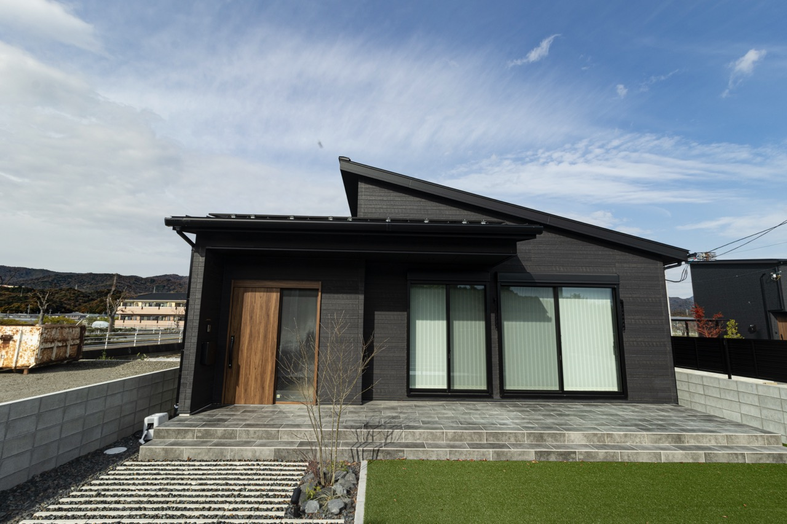
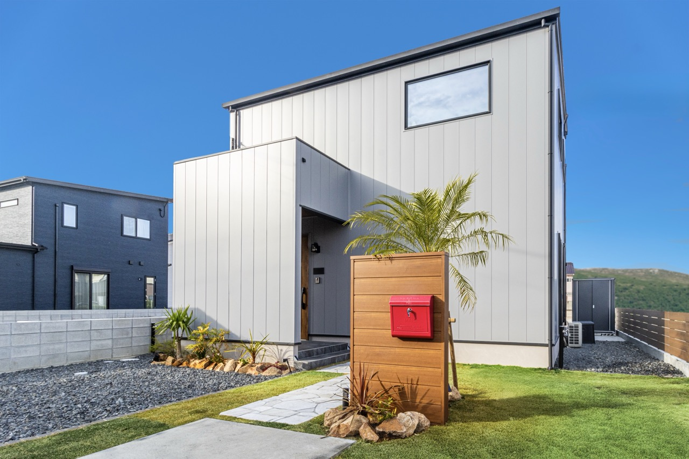

GRACE GARDEN（株）
- 概要
- 企業のHP、DTP、SNS用の写真撮影 画像編集
- 目的／意図
- 企業の宣伝用に竣工写真が欲しい。また使いやすいように画像編集してほしい
- 使用ツール
- Ps / Lr
- デザインの意思入れ
-
夜に映える写真が欲しいとの依頼だったため夜間撮影を行いました。
あらかじめ明るく、広角気味に撮影し、編集しやすいようにしました。
はじめにLrで明るさ、色調、遠近感等を修正。そのままPsへ飛んで背景の削除、フレアの修正、光源の追加等を行いました。 - 制作期間
- ２週間程度（１００枚程）



